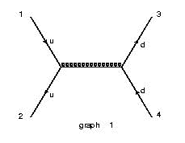
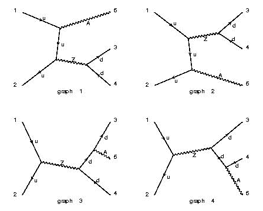

| PROCESS | Sample Diagram | Notes |
|---|---|---|
| u u~ > d d~ |  | The maximum number of QED couplings is automatically set to zero so only QCD is on. The QED contributions (W,photon,Z) are now off. |
| u u~ > d d~ QED=2 | |
Diagrams with two QED couplings are allowed, besides the default QCD couplings. This entails that all the possible contributions (W,gluon,photon,Z) appear. In total 4 diagrams appear. |
| u u~ > d d~ / w+ QCD=0 | |
The maximum number of QCD couplings is set to zero, and the contribution from an internal W+ (or W-) are eliminated. As a result only the contributions from the exchange of a photon and a Z appear. |
| u u~ > z > d d~ a QCD=0 |  | The maximum number of QCD couplings is set to zero, and the presence of a Z in an s-channel diagram is requested. As a result possible contributions from the exchange of a W in the t-channel or a photon in the s-channel are excluded. |
| g g > t t~ > b b~ e+ e- ve~ ve | |
This is t tbar production with semileptonic decays for both tops. Automatically, the maximum number of QCD couplings is set to 2 and the QED is set to 4. The requirement of having the two top on-shell, avoids the generation of non resonant contributions such as gg>bb~ZZ with the subsequent decays of the Z's, giving in total 203 diagrams instead of just 3. Note that in general, the decay chain syntax below is better for decay processes. |
| u u > ul ul, ul > u n1, (ul > u n2, (n2 > e+ el-, el- > e- n1)) | |
SUSY u squark pair production, with different decay of the two squarks. Only diagrams compatible with the chosen decay chain are generated, and the ul, n2, and el- are required to be within the Breit-Wigner in the following event generation. |
| PROCESS | Directories | Subprocesses | Notes | |
|---|---|---|---|---|
| p p > e+ ve | Pdxu_e+ve Pudx_e+ve |
d~ u -> e+ ve u d~ -> e+ ve |
s~ c -> e+ ve c s~ -> e+ ve |
The special codes p and j, sum over gluon, and n light quark flavors and their anti_particles, as specified by the option. MadGraph is able to identify and combine explicitly identical subprocesses. |
| p p > W+ j j, W+ > l+vl |
Puxu_e+veuxd Puu_e+veud ... |
u~ u -> e+ ve u~ d g g -> mu+ vm s c~ ... |
u~ u -> mu+ vm u~ d g g -> e+ ve s c~ ... |
In this example, W + jets production is requested, with the subsequent leptonic decay of the W+. If l = e , mu is chosen in the options, then both possibilities are included. MadGraph is able to identify and combine explicitly identical subprocesses. |